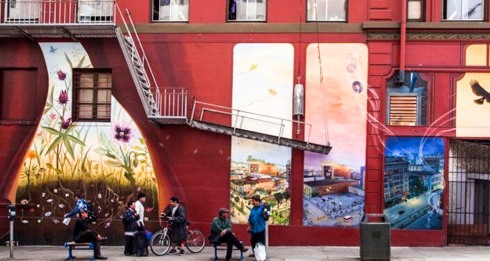

Ministry
10 stories.

Why a Discipleship Training School Can Change Your Life?
More than a school, DTS is a journey of knowing God, growing in faith, serving others, and discovering your purpose in God's mission.

Keeping the Lights On – 'After Hours' in the Ellis Room
When it rains in the Tenderloin, the Ellis Room barely closes. The lights stay on and the mission carries late into the night. People with nowhere else to go come in…

Church That Shows Up
Every Sunday morning, church shows up right outside our community center. What begins with hot chocolate and cookies often turns into worship, a simple message, and…

Feeding Our City with Hope
Every week in San Francisco, more than 300 people line up not just for groceries, but for hope. At the YWAM San Francisco Food Pantry, neighbors are met with fresh food,…

Hot Chocolate, A Simple Ministry Making a Real Impact in San Francisco
On the streets of San Francisco, something simple is making a real impact. At YWAM San Francisco, our Hot Chocolate Ministry uses a warm drink to build connection,…
Sep 10, 2020 · MinistryLove Your Neighbor(hood): Tech In The Tenderloin
Let’s all be bridge-builders where we are. Whether you’re here in San Francisco, or somewhere else. As Jesus was Immanuel, God with us, let us who know him be with those…
Jul 2, 2020 · MinistryLove Your Neighbor(hood): The Youth of the Tenderloin
These kids know and embrace that their neighborhood is not always the cleanest, rough around edges or even unsafe at times; and yet they talk about how they know it…

Love Your Neighbor(hood): History of the Tenderloin
These days the Tenderloin is still a welcoming beacon for all. YWAM is able through God’s provision to provide a place for those in need, giving a place to drop-in,…
Apr 12, 2020 · MinistryReflections on Easter during this crisis
The resurrection of Jesus is my favorite message–story–event ever. Resurrection Day is a day for me that marks the beginning of my year, it reminds me why I breathe, why…

Love Your Neighbor(hood): Arts and Murals
Living in the Tenderloin has taught me a lot about seeking out God’s beauty amidst the chaos of daily life. The Tenderloin has always been an eclectic neighborhood…